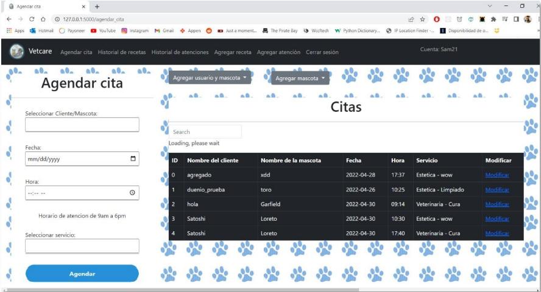
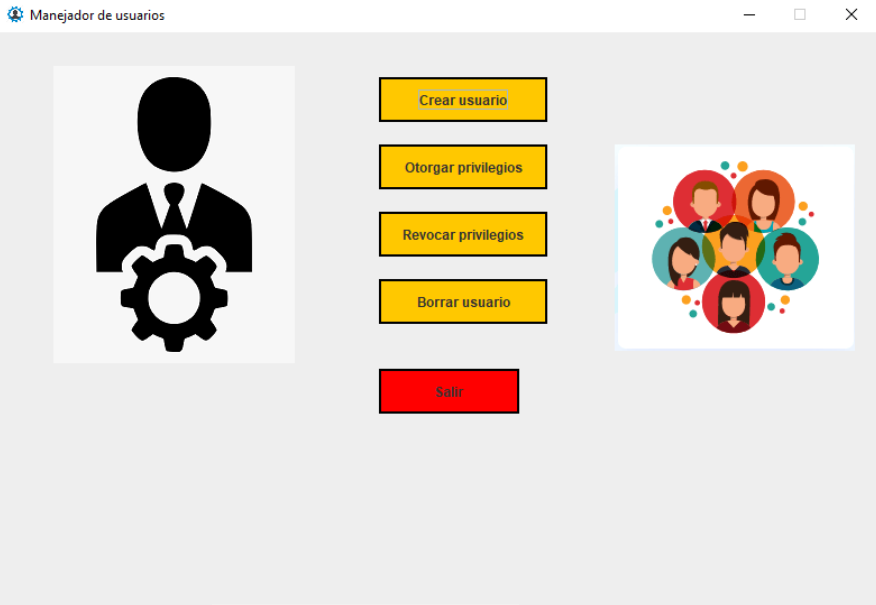
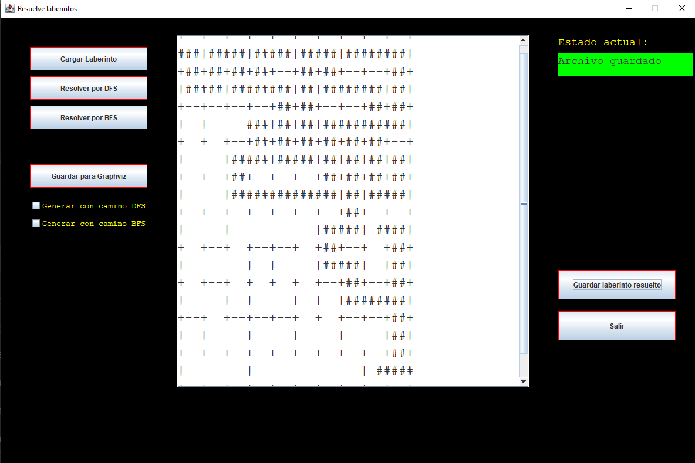

Actualmente me encuentro en el quinto semestre de la carrera Ingeniería en Sistemas de Información en la Universidad de Sonora. Responsable y orientado a resultados, apasionado sobre el aprendizaje continuo referente al desarrollo de software y todo lo que envuelve, flexible, adaptable y muy colaborativo en equipos de trabajo.
Sistema que se encuentra en desarrollo en Python y Flask, con el objetivo de agilizar la toma de asistencias.
Sistema hecho en Python con ayuda del framework Flask, que permite gestionar una veterinaria, desde agendar una cita hasta recetar a la mascota de un cliente.
Sistema hecho en Java que permite gestionar usuarios y sus privilegios, así como revocarlos en distintas bases de datos de un servidor MySQL.
Sistema hecho en Java, que resuelve laberintos dados en un documento de texto mediante los algoritmos DFS y BFS.
